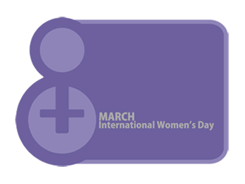
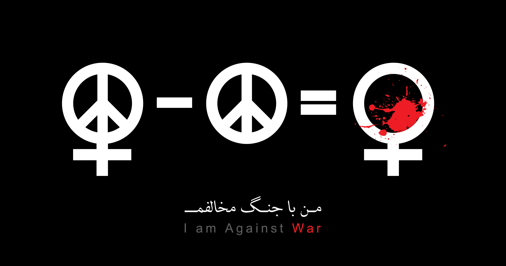
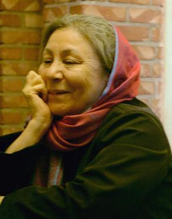
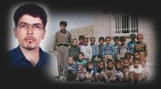
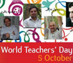
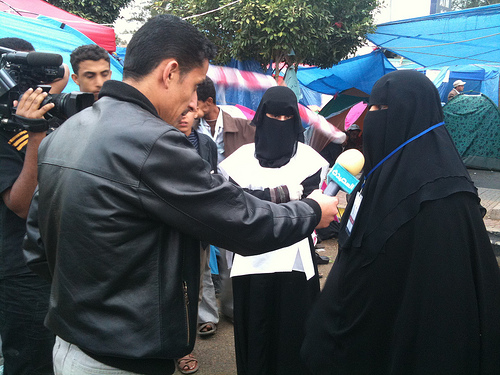

تغییر برای برابری
تغییر برای برابریتا زمانیکه در قانون ماهوی مقنن چند همسری را ممنوع نکند یعنی صراحتا این مسئله را عنوان نکند اصل بر چند همسری است و سکوت قانونگذار دلیل بر حذف چند همسری نیست. حذف ماده 23 لایحه حمایت خانواده تقدیمی به مجلس هم دایر بر حذف چند همسری نیست، چون قانون فوق شکلی است...
پذيرش > واژه كليدها > صفحه بندی > ستون وسط
ستون وسط
مقالهها
-
با حذف ماده 23 چند همسری از قانون حذف نمی شود / زهره ارزنی
16 اوت 2011 -

کلاژ آرزوهای 8 مارس
9 مارس 2010آزادی، فضا، حتی حیات را ممکن است از ما بگیرید، اما آرزو را نه! می خواستیم در این روزهای سیاهی و زندان، آرزوهایمان شاد باشند و امیدوار! اما انگار شادی هم خود در این زمانه آرزو است. ولی ما امیدواریم، امیدواری ای که راه را برای آرزو باز می کند. امیدواری ای که می توانید در چشمان و نوشته های ما بخوانید.
-
 گردهمایی جمعی از فعالان جنبش زنان در اعتراض به ترویج چندهمسری
گردهمایی جمعی از فعالان جنبش زنان در اعتراض به ترویج چندهمسری
2 اكتبر 2010سه شنبه ششم مهرماه 1389، نشستی با حضور جمعي از فعالان جنبش زنان، در اعتراض به ترویج چندهمسری در قالب لایحه حمایت از خانواد برگزار شد. در این نشست که مدافعان حقوق زنان از طیف های مختلف حضور داشتند، در مورد فرایند تصویب لایحه حمایت از خانواده، و مواد مربوط به تعدد زوجات در این لایحه، بحث و تبادل نظر صورت گرفت.
-
گروههای مختلف زنان تونسی برای ایجاد تغییر در شرایط خود متحد می شوند / گفتگو با خدیجه ارفویی، فعال حقوق زنان در تونس
8 مارس 2011در حال حاضر، ما هوشیار هستیم و باید هم هوشیار بمانیم، تا اول از همه مطمئن شویم که اتفاقی برای حقوقی که در حال حاضر داریم، نمی افتد: دستاوردهایی که در سال 1956 با تصویب قانون احوال شخصی بدست آوردیم و و چند مورد دیگر که در دهه ی 90 به این قانون اضافه شد. ما اعتقاد داریم که حفظ حقوق هیچ گروهی به معنی تجاوز و تحطی به حقوق دیگران نیست...
-

فریادهایی که شاید بشنوید / اعلام مخالفت فعالین حقوق زنان در ایران با جنگ به مناسبت هشت مارس
8 مارس 2012ما نمی خواهیم قربانیان خاموش این غول باشیم. ما در روز 8 مارس 2012 بی آنکه فرصتی برای شادی یا طرح مطالباتمان در خیابان داشته باشیم، این روز را بهانه ای کردیم تا بگویم با جنگ مخالفیم و هر کدام در یک فیلم کوتاه دلیل مخالفتمان را گفته ایم.
-
احزاب و گروه های سیاسی مدافع مذهب در برزیل به مخالفت کردن با حقوق زنان ادامه می دهند
12 اكتبر 2013تغییر برای برابری - برزیل در حال بررسی تصویب قانونی است که به "قانون کودک متولد نشده" موسوم است. وبسایت awid (انجمن پیشبرد حقوق زنان) گفتگویی با روزانجلا تالیب، هماهنگ کننده اجرایی انجمن کاتولیک های طرفدار حق انتخاب (CDD/BR) درباره تاثیر تصویب این طرح و طرح های مشابه بر حقوق جنسی، تناسلی و بهداشتی زنان SRHRs) ) و چالش های احتمالی که گروه های سیاسی مدافع مذهب در برابر مبارزه برای حقوق زنان بوجود می آورند، انجام داده است .
-

نگاهی مختصر به انگیزه های احتمالی شکل گیری کمپین یک میلیون امضا / فیروزه مهاجر
3 سپتامبر 2013وقتی تصمیم می گیرم به مناسبت سالگرد کمپین یک میلیون امضا درباره روزهای آغازین آن بنویسم از خودم می پرسم واقعیت کمپین را با چه کلماتی باید گفت، چرا که حالا همه به همان زبان صحبت می کنند. در دوران کمپین چنین نبود. با اینهمه حرف زدن از آن دوران، از زمینه های شکل گرفتن کمپین صرف نظر از این که حرکتی نو بود یا نبود، ساده نیست.
مواضع و دیدگاه هایی که در ارتباط با کمپین یک میلیون امضا برای تغییر قوانین زن ستیز مطرح هستند جملگی تاکید بر این دارند که اندیشه آن از کمپینی مشابه در مراکش دهه قبل آمده بود. می خواهم به این مسئله بپردازم که علاوه بر آن چه عوامل تاثیرگذار یا انگیزه های محتمل دیگری در تصمیم گیری به اجرای کمپین یک میلیون امضا برای تغییر قوانین ضد زن می توان یافت. یعنی، اندیشه ای که برای اجرای کمپین شکل گرفت تحت تاثیرعواملی دیگر، یا تجربه هایی دیگر، هم بود که یادآوری آن ها خالی از فایده نیست. بنابراین، نگاهی می اندازم به برخی انگیزه هایی که در تابستان 1385 اندیشه اجرای کمپین یک میلیون امضا از آن ها سر برآورد. به این امید که شاید بحث هایی مانند این بتواند راهشگا باشد...
-

سفیران صلح کردستان در اوین/ کاوه کرمانشاهی
9 مه 2011, بوسيلهى pariنامههایی که از آن سوی دیوارهای بلند و اتاقهای تاریک میآیند رنگ صلح دارند و بوی آشتی میدهند. هر چند روایتشان درد یک ملت است و رنج یک زندانی. بسیاری فرزاد و شیرین را با همین نامهها شناختند، اما کسان دیگری هم بودند که پشت آن دیوارهای بلند و در آن اتاقهای تاریک با آنها همخانه و همدم شدند.
-

پشتیبانی جمعی از فعالان حقوق زنان از بیانیه کمیته هماهنگی "کمپین حمایت از معلمان"
2 اكتبر 2012, بوسيلهى pariبیش از صد و پنجاه تن از فعالان حقوق زنان با انشتار بیانیه ای، اعلام کرده اند که برای دفاع از حقوق معلمان ایرانی، به ویژه معلمانی که به دلیل فعالیتهای صنفی شان حکم مجازات دریافت کرده اند، از کمپین حمایت از معلمان، پشتیبانی می کنند. فعالان حقوق زنی که این بیانیه را امضا کرده اند، به فشار مضاعف و محدودیتهای بیشتری که در ایران متوجه زنان معلم است و نیز به شرایط زنانی که همسرشان معلم زندانی است، اشاره داشته اند.
-

سرپيچي انبوهي از زنان يمني از ظلم و كليشه
1 اوت 2011يكي از ويژگي هاي جنبش معترض در يمن اين است كه براي نخستين بار زنان نيز جزئي از جريان زندگي اجتماعي هستند. ال تايباني گفت: " يك زن كه سواد خواندن و نوشتن نداشت به من گفت: تنها با بودن در معرض زندگي در جريان در ميدان احساس مي كند كه در حال تحصيل است."...
0 | ... | 110 | 120 | 130 | 140 | 150 | 160 | 170 | 180 | 190 | ... | 450